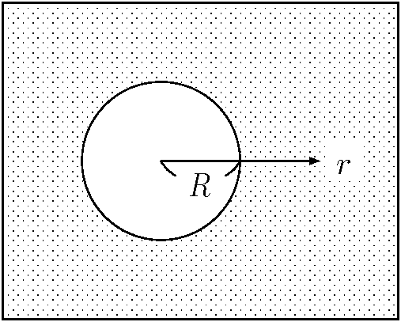
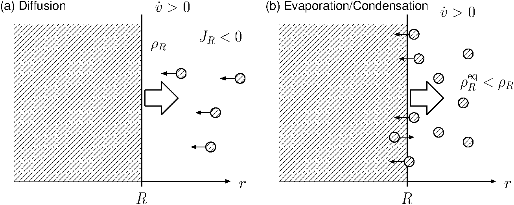
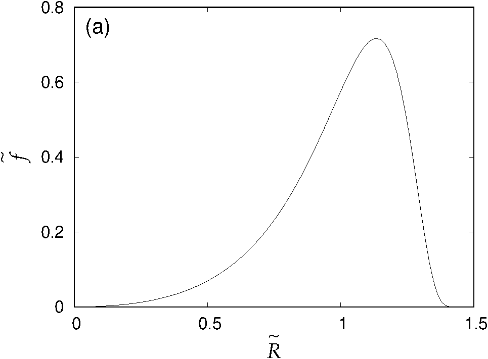
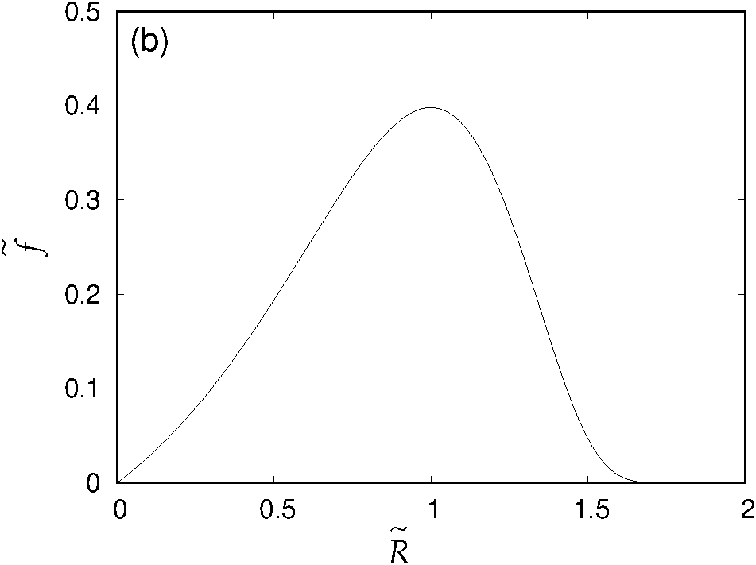

1 はじめに
気体を急冷して過飽和にすると、液滴が発生する。 また、溶液を急冷して過飽和にすると、溶けていた物質が析出してくる。 急冷した直後は多数のdropletが出現するが、その後は大きなものがより大きく、 小さなものがより小さくなる、いわゆるオストワルド成長(Ostwald ripening, coarsening)が起きる。 LifshitzとSlyozov (LS)、そしてWagner (W)がこのオストワルド成長の古典論を構築し、現在は まとめてLSW理論と呼ばれている。このうち、前者(LS)はロシア語で、後者(W)はドイツ語の論文として発表された。 LSは英訳が手に入るが [1]、後者 [2]は直接の英訳は(少なくとも筆者には)見当たらない。同様な内容は 様々な教科書に記述があるものの、オリジナルの論文の論旨がわかりやすいので、 このノートではWagnerの議論をフォローする。以下の内容は、スケーリングに関してはBinderのレビューを [3]、 kinetic equationと分布関数の導出についてはWagnerの原著論文 [2]を参照した1。
一次転移を起こす系であればどのような系でもオストワルド成長を観察することができる。 歴史的には、溶液からの固体の析出や、合金の相分離などが精力的に研究されているが、 それらは例えば溶媒と溶質等を含む多成分系となる。多成分系でも以下の話は全く同様なのだが、 話を簡単にするために以下では一成分系である過飽和蒸気中の液滴成長の話に限定する。 合金系については、例えばBaldanのレビューが詳しい[4]。 スピン系については、やや古いがBinderによるレビューがていねいでわかりやすいので参照されたい [3]。
2 LSW理論の概要
LSW理論は液滴のサイズ分布関数の時間発展を追う。 支配方程式は連続の式である。 分布関数は液滴のサイズと、時間という二変数を持ち、連続の式はそれぞれの変数の偏微分を含む 偏微分方程式となる。 ここで、系に特徴的なサイズがあるとし、そのサイズで系をスケールすると、時間に依存しないように見えるとしよう。 すると自由変数が一つだけとなるので、支配方程式が常微分方程式となり、解くことができる。 これがLSW理論の基本的な考え方である。 連続の式には、「あるサイズの液滴がある時刻においてどう変化するか」を記述する、kinetic equationと呼ばれる 式が含まれる。オストワルド成長では、系に臨界サイズが存在し、そのサイズより小さな液滴は蒸発して消えていき、 大きな液滴は成長していく。その臨界サイズは時間とともに大きくなるため、より大きな液滴のみ成長が許され、 最終的にはただひとつの液滴に収束する。このkinetic equationは一般には複雑な関数となるが、 平均場描像に従い、かつ「液滴表面における蒸発/凝結よりもまわりの拡散の方が遅い」という拡散律速の極限を取ることで 簡単な関数形に落とすことができる。すると臨界半径が時間に対して\(t^{1/3}\)のベキで成長していくことが予想され、 \(1/3\)則と呼ばれている。LSによる最初の論文は、拡散律速の場合で\(t^{1/3}\)の成長を論じたが、 Wagnerはより一般的な議論を展開した後に、拡散が遅い極限と早い極限を取った。そして 拡散律速(diffusion-limited)の場合にはLSが導いたように臨界半径が\(t^{1/3}\)のベキで成長するが、 液滴界面における蒸発/凝結のほうが律速となる反応律速(reaction-limited)2の場合には\(t^{1/2}\)のベキとなることを予想し、こちらは1/2則と呼ばれている。本稿では、主にこのWagnerの理論を追うことにする。
なお、同様に液滴のサイズ分布関数を扱う理論としては古典核生成論がある。 オストワルド成長では、時間が経過するにつれて液相が増えていくため、気相の蒸気圧が下がっていく、 非平衡非定常状態を記述するが、古典核生成論では「常に気相の圧力が一定である」という境界条件を課し、 非平衡定常状態を仮定する。すると時間微分が消えるため、やはり連続の式が常微分方程式となり、解くことができる。 そちらについても簡単な解説を用意したので、興味の有る方は参照されたい [5]。
3 スケーリング理論
純粋な気相状態にある系を急冷(もしくは圧縮)することでその温度の飽和蒸気圧よりも高い圧力とし、 液滴を生成させることを考える。以下、急冷後の温度は一定とする。 時刻\(t\)に半径\(R\)の液滴が何個あるかを表す分布関数\(f(R,t)\)を考える。 オストワルド成長では臨界半径\(R_c\)が存在し、その半径よりも大きな液滴は成長し、そうでない液滴は小さくなっていく。 その臨界半径の漸近形が \[R_c = R_0 t^{\alpha}\] となることを仮定し、臨界半径でスケールした半径\(\tilde{R} = R/R_c\)による表示を採用する。 この時、分布関数が \[\begin{aligned} f(R,t) &\sim t^\beta \tilde{f}(\tilde{R}) \end{aligned}\] とスケールされることを要請する。これは、世界を臨界半径\(R_c\)で見ると、時間に依存しなくなることを意味する。 さて、オストワルド成長において表面積変化のダイナミクスは、体積変化のダイナミクスより十分に遅く、 急冷から十分に時間が経過した系では、液相の全体積はほとんど変化せず、液滴の全表面積のみ減っていくと考えられる。 液相の全体積\(V\)は \[\begin{aligned} V &\sim \int R^3 f {\mathrm d}R \\ &= t^{\beta + 4\alpha} \int \tilde{R}^3 \tilde{f} {\mathrm d}\tilde{R} \end{aligned}\] で表されるから、これが時間変化しないことを要請すると\(\beta = -4\alpha\)を得る。 この時、全液滴数\(n\)の時間発展は分布関数の0次のモーメントとして次のように得られる。 \[\begin{aligned} n(t) &= \int f {\mathrm d}R \\ &= t^{-3 \alpha} \int \tilde{f} (\tilde{R}) {\mathrm d}\tilde{R} \\ &\sim t^{-3 \alpha} \end{aligned}\] すなわち、液滴数は\(3 \alpha\)のベキで減衰する。同様な計算から、液滴の平均半径\(\bar{R}\)が\(t^{\alpha}\)に従って成長することもわかる。
次に、分布関数の時間発展を考える。 分布関数は以下の連続の式に従うであろう。 \[\frac{\partial f}{\partial t} = - \frac{\partial }{\partial R} \left(\dot{R} f \right)\] ここで、\(\dot{R}(R,t)\)は、kinetic equationと呼ばれ、時刻\(t\)において半径\(R\)を持つ液滴の成長率を表し、 以下のような性質を満たす。 \[\dot{R} \left\{ \begin{array}{cc} \geq 0 & \textrm{if} \quad R \ge R_c \\ < 0 & \textrm{if} \quad R < R_c \end{array} \right.\] すなわち、ある時刻\(t\)における臨界半径\(R_c(t)\)より大きな半径を持つ液滴は成長(\(\dot{R}>0\))し、 そうでなければ小さくなる。このkinetic equationも以下のようにスケールされると仮定する。 \[\frac{\dot{R}}{R_c} \sim t^\gamma \tilde{\dot{R}}(\tilde{R})\] 自由変数を\((R,t)\)の組から\((\tilde{R},t)\)の組に取り、連続の式を書き直す。 \[\begin{aligned} \frac{\partial f}{\partial t} &= \frac{\partial }{\partial t} (t^{-4\alpha} \tilde{f}) \\ &= - 4 \alpha t^{-4\alpha -1} \tilde{f} - t^{-4\alpha}\frac{\partial \tilde{f}}{\partial t} \\ &= - 4 \alpha t^{-4\alpha -1} \tilde{f} - \alpha t^{-4\alpha-1} \tilde{R} \frac{{\mathrm d}\tilde{f}}{{\mathrm d}\tilde{R}} \\ &= - \alpha t^{-4 \alpha -1} \left( 4 \tilde{f} + \tilde{R}\frac{{\mathrm d}\tilde{f}}{{\mathrm d}\tilde{R}} \right) \end{aligned}\]
\(\dot{R} = t^{\alpha + \gamma} R_0 \tilde{R}\)であることに注意して、 \[\begin{aligned} \frac{\partial }{\partial R} \left(\dot{R} f \right) &= t^{-3\alpha + \gamma} \frac{\partial }{\partial R} \left(R_0 \tilde{\dot{R}} \tilde{f} \right) \\ &= t^{-4 \alpha + \gamma} \frac{{\mathrm d}}{{\mathrm d}\tilde{R}} \left(\tilde{\dot{R}} \tilde{f} \right) \end{aligned}\] これらを連続の式に代入し、両辺を整理して時間に依存しないことを要請すると、\(\gamma = -1\)を得る。
以上から、連続の式は \[\alpha \left( 4 \tilde{f} + \tilde{R}\frac{{\mathrm d}\tilde{f}}{{\mathrm d}\tilde{R}} \right) = \frac{{\mathrm d}}{{\mathrm d}\tilde{R}} \left(\tilde{\dot{R}} \tilde{f} \right)\] 整理すると、以下のスケールされた連続の式を得る。 \[3 \tilde{f} = \frac{{\mathrm d}}{{\mathrm d}\tilde{R}} \left[ \left( \frac{\tilde{\dot{R}}}{\alpha } - \tilde{R} \right) \tilde{f} \right] \]
ここで、 \[u = \frac{\tilde{\dot{R}}}{\alpha } - \tilde{R}\] と定義すれば \[3 \tilde{f} = \frac{{\mathrm d}}{{\mathrm d}\tilde{R}} (u \tilde{f})\] この式は積分できて、以下の形となる3。 \[\tilde{f} = \frac{1}{|u|} \exp \int_0^{\tilde{R}} \frac{3}{u} {\mathrm d}\tilde{R} \] すなわち、kinetic equation \(\dot{R}\)が与えられれば、分布関数の漸近形\(\tilde{f}\)もわかることになる。

4 Kinetic Equation
液滴成長のダイナミクスを考える。過飽和蒸気中におかれた液滴は成長するが、その際、拡散と凝結という二種類の現象が起きている。 液滴に分子が吸着していくと、液滴付近の気相密度が下がる。すると圧力も下がるため、吸着が起きづらくなる。 従って、もしも吸着の速度よりも拡散が極めて遅い場合、液滴の成長速度は拡散による分子の供給で律速される。 これを拡散律速(diffusion-limited)と呼ぶ。 逆に、もし吸着速度が拡散よりも極めて遅い場合、液滴の成長速度は吸着速度に律速され、液滴のまわりの気相密度はほぼ一様となる。 この状態を反応律速(reaction-limited)と呼ぶ。 Wagnerは、界面付近での拡散と反応の物質のバランスを考えることで、この二つの律速で液滴の成長率がどうなるかを議論した。 以下ではその議論を概観する。

4.1 界面付近の物質流の釣り合い
まず拡散を考える。 座標の原点を液滴の中心に取り、半径\(R\)の液滴表面における 密度\(\rho_R\)と密度カレント\(J_R\)を求める。 球対称を仮定すると、拡散方程式の定常解は \[\begin{aligned} \rho_R &= \rho_0 + \frac{C}{R}\\ J_R &= -D \frac{{\mathrm d}\rho_R}{{\mathrm d}R} = \frac{DC}{R^2} \end{aligned}\] で与えられる4。 ただし、\(D\)は拡散定数、\(\rho_0\)は\(R \rightarrow \infty\)での密度、すなわち気相密度であり、 \(C\)は積分定数である。ここで積分定数\(C\)を消去すると、 \[J_R = D \frac{(\rho_R - \rho_0)}{R}\] 液滴が大きくなるためには、カレントは液滴に向かっていなければならない。 座標軸を液滴中心から離れる向きを正にとっているため、この時カレントは負(\(J_R<0\))となる(図 1(a)を参照)。 界面におけるカレントを、全表面で積分したものが体積の増加分であるから、 \[\dot{v} = - 4 \pi R^2 J_R = - 4\pi RD(\rho_R - \rho_0 ) \] を得る。
次に、界面における蒸発/凝結プロセスを考える。 界面が曲率をもっている場合、平坦である場合の飽和密度からずれる。 そこで、半径\(R\)を持つ液滴表面の平衡気相密度を\(\rho_R^{\mathrm{eq}}\)とする。 液滴表面の気相密度を\(\rho_R\)とし、平衡密度との差が小さい場合には、 蒸発/凝結速度はその差に比例すると考えて良いだろう(線形近似)。 液滴が成長する場合(\(\dot{v}>0\))とは、過飽和な状態、すなわち液滴表面密度\(\rho_R\)よりも 飽和密度(\(\rho_R^{\mathrm{eq}}\))の方が小さい場合であるから、比例定数を\(k>0\)として、体積変化は \[\dot{v} = 4 \pi R^2 k (\rho_R - \rho_R^{\mathrm{eq}} ) \] とかける。
さて、液滴界面において、拡散で運ばれる物質量と蒸発/吸着する物質量は等しいはずである。 そこで式([eq_diffusion])及び([eq_reaction])から\(\dot{v}\)を消去し、\(\rho_R\)について解くと \[\rho_R = \frac{Rk\rho_R^{\mathrm{eq}} + D \rho_0 }{Rk + D} \] を得る5。これを\(\dot{v}\)の式に代入すると、 \[\dot{v} = \frac{4 \pi R^2 kD}{Rk + D} (\rho_0 - \rho_R^{\mathrm{eq}}) \] となる。
さて、ここで\(\rho_R^{\mathrm{eq}}\)を見積もる。 Gibbs-Thomsonの式から、平坦な界面の飽和蒸気圧\(p_\infty\)と、半径\(R\)を持つ液滴の飽和蒸気圧\(p_R\)は 以下で与えられる6。 \[\ln \frac{p_R}{p_\infty} = \frac{\lambda}{R}\] ただし\(\lambda\)はキャピラリー長さであり、以下で与えられる。 \[\lambda = \frac{2 \gamma V_m}{k_B T}\] ここで\(\gamma\)は界面張力、\(V_m\)は原子体積(molecular volume)である。 界面付近の気相を扱っているため理想気体近似をすると、圧力と密度は比例するため \[\frac{p_R}{p_\infty} = \frac{\rho_R^{\mathrm{eq}}}{\rho_\infty}\] さらに、\(\rho_R^{\mathrm{eq}}\)と\(\rho_\infty\)の差が小さいとして線形近似すると、 \[\rho_R^\mathrm{eq} = \rho_\infty\left(1 + \frac{\lambda}{R} \right)\]
後の便利のために以下の式変形をしておく。 \[\begin{aligned} \rho_0 - \rho_R^\mathrm{eq} &= \frac{\rho_\infty \lambda}{R} \left(\frac{R}{R_c} -1 \right) \end{aligned}\] ただし、 \[R_c \equiv \frac{\rho_\infty \lambda}{(\rho_0 -\rho_\infty )}\] これを\(\dot{v}\)の式([eq_vdot2])に代入すると、 \[\dot{v} = \frac{4 \pi R kD \rho_\infty \lambda}{Rk + D} \left(\frac{R}{R_c} -1 \right) \] を得る。
4.2 拡散律速
拡散律速であれば、液滴表面における密度\(\rho_R\)は、ほぼその半径における飽和蒸気圧に対応する密度\(\rho_R^\mathrm{eq}\) になっているであろう。これは式([eq_rhor])において\(Rk \gg D\)の極限をとったことに対応する。 これを代入すると \[\dot{v} = 4 \pi R^2 J_R = 4\pi RD(\rho_R^{\mathrm{eq}} - \rho_0 )\] となる。これに式([eq_rc])を代入すれば \[\begin{aligned} \dot{v} &\sim 4 \pi kD \rho_\infty \lambda \left(\frac{R}{R_c} -1 \right)\\ & \propto & \left(\frac{R}{R_c} -1 \right) \end{aligned}\] を得る。これは式([eq_vdot])において\(Rk \gg D\)の極限をとったことに対応する。 また、\(\dot{v} = 4 \pi R^2 \dot{R}\)より \[\dot{R} \propto \frac{1}{R^2} \left(\frac{R}{R_c} -1 \right)\] であるから、 \[\begin{aligned} \frac{\dot{R}}{R_c} &\propto& \frac{1}{R_c R^2} \left(\frac{R}{R_c} -1 \right)\\ &= \frac{1}{R_c^3 \tilde{R}^2} (\tilde{R} -1) \\ &= \frac{t^{-3 \alpha}}{R_0^3 \tilde{R}^2} (\tilde{R} -1) \end{aligned}\] スケーリングの要請\(\dot{R}/R_c \sim t^{-1} \tilde{\dot{R}}\)より、\(\alpha =1/3\)が結論される。 この時、スケールされたkinetic equationは \[\tilde{\dot{R}} = \frac{K_D}{\tilde{R}^2} (\tilde{R} - 1)\] となる。ただし\(K_D\)は比例定数である。
拡散律速の場合、\(\alpha =1/3\)であるから、臨界半径は\(R_c \sim t^{1/3}\)というベキで成長する。 これは\(1/3\)則と呼ばれている。
4.3 反応律速
反応律速であれば、拡散流れはほぼゼロになっているであろう。 従って\(J_R=0\)より、\(\rho_R = \rho_0\)となる。これは式([eq_rhor])において\(D\gg Rk\)の極限をとったことに対応する。 これを式([eq_reaction])に代入すると、 \[\dot{v} = 4\pi R^2 k(\rho_0 - \rho_R^{\mathrm{eq}})\] となる。 これに式([eq_rc])を代入すれば \[\begin{aligned} \dot{v} &\sim 4 \pi R k \rho_\infty \lambda \left(\frac{R}{R_c} -1 \right)\\ &\propto & R \left(\frac{R}{R_c} -1 \right) \end{aligned}\] を得る。これはこれは式([eq_vdot])において\(D\gg Rk\)の極限をとったことに対応する。 拡散律速と同様な計算から、\(\alpha=1/2\)を得る。 この時\(R_c\sim t^{1/2}\)となるため、\(1/2\)則と呼ばれる。 反応律速の場合のスケールされたkinetic equationは \[\tilde{\dot{R}} = \frac{K_R}{\tilde{R}} (\tilde{R} - 1)\] となる。
4.4 分布関数


スケールされた分布関数は式([eq_int])で与えられているため、kinetic equationを与えれば、具体的に 分布関数の形を求めることができる。特に、比例定数が特定の値の場合には計算が容易になる。
拡散律速のkinetic equationの比例定数が\(K_D = 9/4\)の場合を考えよう7。 すると、式([eq_int])の左辺にあらわれる被積分関数は \[\frac{3}{u} = - \frac{4}{3 (3 + \tilde{R})} + \frac{5}{3 (3/2 -\tilde{R})} - \frac{6}{(2\tilde{R} -3)^2}.\] と部分分数分解できる。このため容易に求積できて、分布関数は\(\tilde{R} <3/2\)の時 \[\tilde{f} = \frac{4}{27} \tilde{R}^2 \left(\frac{3}{3+\tilde{R}} \right)^{7/3} \left( \frac{3/2}{3/2 - \tilde{R}}\right)^{11/3} \exp \left[\frac{-\tilde{R}}{3/2-\tilde{R}} \right], \] となる。なお\(\tilde{R} \ge 3/2\)の時には\(\tilde{f}=0\)である。 関数形を図[fig_scale] (a)に示す。
同様に、反応律速のkinetic equationの比例定数が\(K_R=2\)の場合を考える8。 すると、式([eq_int])の左辺にあらわれる被積分関数は \[\frac{3}{u} = \frac{3}{2-\tilde{R}} - \frac{6}{(2- \tilde{R})^2}.\] となり、分布関数は\(\tilde{R} <2\)の時 \[\tilde{f} =\frac{1}{4} \tilde{R}\left(\frac{2}{2- \tilde{R}} \right)^{5} \exp \left[- \frac{3 \tilde{R}}{2-\tilde{R}} \right], \] となる。\(\tilde{R} \ge 2\)の時には\(\tilde{f}=0\)である。 関数形を図 [fig_scale] (b)に示す。
4.5 液滴と気泡の違いについて
以上は液滴の場合の議論であるが、急減圧した液体中にあらわれる気泡においても全く同じ議論が適用できる。 ただし、液滴と気泡では\(\dot{v}\)の式([eq_vdot2])にあらわれる符号が逆になる。 例えば、気液界面で蒸発がおきると液滴は小さくなるが、気泡は大きくなる。 また、気泡が大きくなるほど、内部圧力はYoung-Laplaceの式に従って小さくなる。 つまり、気泡が大きくなるためには、気泡の内部密度は薄くなる必要があるため、カレントは中心から逃げる向き、すなわち正の向きとなる。 これは液滴が大きくなるのと逆向きである。
さらに、さらに半径\(R\)を持つ液滴の飽和濃度\(\rho_R^{\mathrm{eq}}\)を線形化したGibbs-Thomsonの式で見積もる際、 液面が液滴表面で凸、気泡表面では凹となることから、曲率が気泡と液滴で逆符号となる。 これらの符号が打ち消し合い、比例定数は若干異なるものの、 最終的に\(\dot{v}\)の式([eq_vdot])の関数形は同じとなる。
5 まとめ
以上、簡単にオストワルド成長の古典論であるLSW理論についてまとめた。 LSW理論の骨子は、二つ、スケーリングの仮定とkinetic equationの推定である。 スケーリングを仮定することで、連続の式が常微分方程式に落ち、分布関数とkinetic equationが積分の形で結ばれる。 kinetic equationは、拡散と反応(蒸発/凝結)のバランスから導かれ、拡散律速の場合と反応律速の場合に 簡単な形となって、ベキ指数と分布関数が決まる。 LSW理論の有効性は実験、数値計算で広く確認されており、分布関数がスケールすること(self-similarity)と、特徴的な長さがべき的に成長すること、その多くは拡散律速を意味する\(t^{1/3}\)に従うこと等が報告されている。 しかし、得られる分布関数形状が理論予想とは大きくずれていることが多く、これは多体効果を無視しているためと考えられる。
LSW理論は本質的に平均場描像にもとづいており、各液滴は、同じ時刻、同じサイズであれば 同じ成長則に従うことが仮定されている。しかし、一般に気相中に複数の液滴が存在する場合には 多体効果が重要となる。特に気相に比べた液滴の密度、より一般に、主相(ambient phase)に比べた 第二相(second phase)の体積比が大きい場合には多体効果が無視できなくなる。 この効果を取り込むため様々な理論が構築された。その一部はBaldanのレビューに紹介されているので参照されたい [4]。
一方、実験、数値計算共に、観測されるのはほとんどの場合において拡散律速であった。 しかし、分子動力学法による気泡生成シミュレーションにより、気泡生成は低温では反応律速、高温では拡散律速にクロスオーバーすることがわかった [6]。反応律速とは、蒸発/凝結に比べて拡散が極めて早い極限であるから、多体効果の影響を受けづらく、古典的なLSW理論がそのまま適用できる可能性があるが、まだ詳細については研究中である。
6 謝辞
國嶋さんに計算ミスの指摘をしていただきました。ありがとうございます。
参考文献
- I. Lifshitz and V. Slyozov, J. Phys. Chem. Solids 19, 35 (1961).
- C. Wagner, Z. Elektrochem. 65, 581 (1961).
- K. Binder, Phys. Rev. B 15, 4425 (1977).
- A. Baldan, J. Mater. Sci. 37, 2171 (2002).
- 渡辺宙志、古典核生成論の簡単なまとめ
http://apollon.issp.u-tokyo.ac.jp/~watanabe/pdf/cntnote.pdf - H. Watanabe, M. Suzuki, H. Inaoka, and N. Ito, J. Chem. Phys. 141, 234703 (2014).
がんばってドイツ語の論文を読んだ。↩︎
反応という言葉は、日本語では化学変化を表すことが多く、相変化を表すのに適切で無い気もするが、以後はreaction-limitedの直訳として反応律速という言葉を用いることにする。↩︎
一度左辺を\(3 u\tilde{f}/u\)として、\(u\tilde{f}\)を右辺に移行すると \(3/u = d (\ln uf)/ d \tilde{R}\)を得る。これを積分して整理すれば式([eq_int])を得る。↩︎
一度密度の\(r\)依存性\(\rho(r)\)を求めてから\(r=R\)を代入したつもりでこのような表記としている。 より正確に書けば\(\rho_R \equiv \rho(R)\)、\(J_R \equiv - D \left. d \rho/dr\right|_{r=R}\)となる。↩︎
ここで\(\rho_R\)が\(\rho_R^{\mathrm{eq}}\)と\(\rho_0\)の線形結合になっており、 \(Rk \gg D\)の場合に\(\rho_R = \rho_R^{\mathrm{eq}}\)、 \(D \gg Rk\)の場合に\(\rho_R = \rho_0\)となることに注意。↩︎
半径\(R_1\)と\(R_2\)を持つ液滴の飽和蒸気圧の比が\(\ln (p_1/p_2) \propto 1/R_1 - 1/R_2\)となる Thomsonの式から、\(R_2\rightarrow \infty\)とすることで得られる。なお、液滴内外の圧力がYoung-Laplaceの式を通じて釣り合っているという力学平衡が仮定されている。↩︎
この値は、\(3/u\)の分母が\((a+\tilde{R})(b + \tilde{R})^2\)の形に因数分解される、という要請から導かれる↩︎
拡散律速の場合と同様に、\(3/u\)の分母が\((c+\tilde{R})^2\)の形に因数分解される、という要請から導かれる↩︎